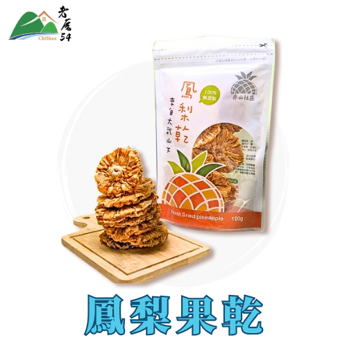
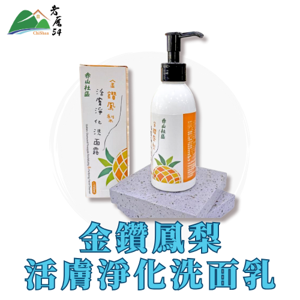

品牌故事
在地風土 · 共好加工 · 自然風味
赤山位於大武山山腳下的偏遠村落，鮮少人知的一個鄉下地方，因此，期望讓赤山社區有不一樣的樣貌煥然一新。
產地風景 / 品牌日常
研發鳳梨全利用，宣揚惜食永續理念，保護社區生態環境
赤山位於大武山山腳下的偏遠村落，鮮少人知的一個鄉下地方，因此，期望讓赤山社區有不一樣的樣貌煥然一新。
在地風土 · 共好加工 · 自然風味
赤山位於大武山山腳下的偏遠村落，鮮少人知的一個鄉下地方，因此，期望讓赤山社區有不一樣的樣貌煥然一新。

嚴選大武山金鑽鳳梨，無加糖保留天然香甜，與赤山小農共創純粹風味。
$150 · 120g/包

金鑽鳳梨萃取搭配植物精華，溫和清潔滋潤，打造清爽不黏膩的洗面保養體驗。
$230 · 150ml/瓶